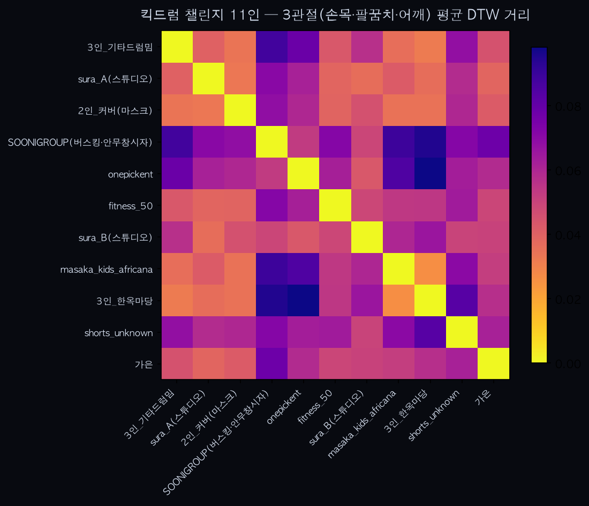
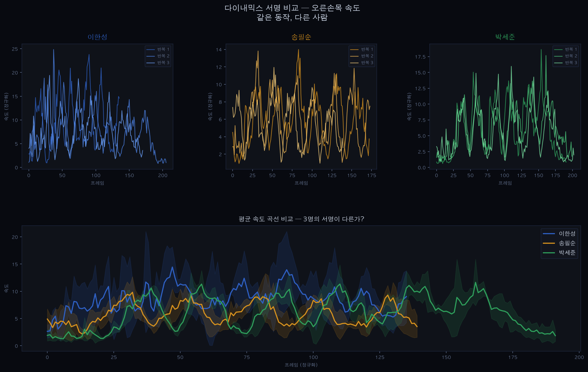
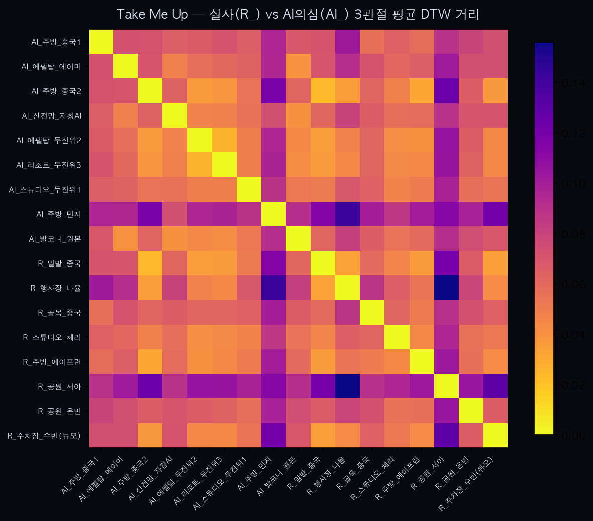
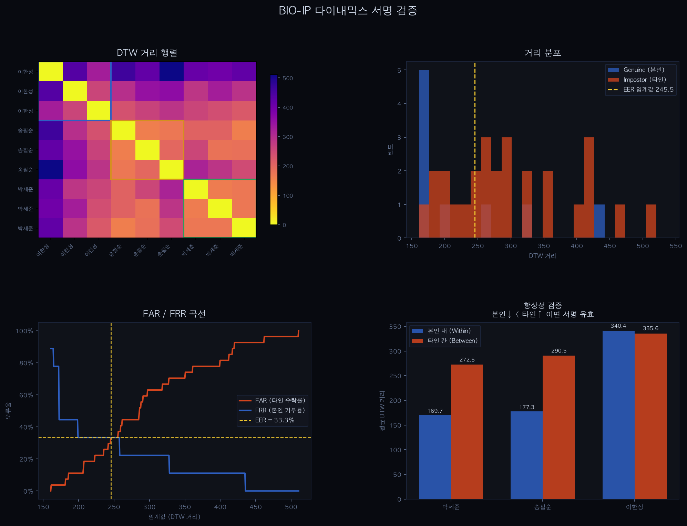

유튜브 춤 영상 50여 개를 실제로 분석해 "움직임에 사람마다의 개성이 있다"는 걸 확인했고, 동시에 "그것만으로 개인을 특정하긴 아직 이르다"는 한계도 봤습니다. 그래서 방향을 "사람의 움직임 느낌을 캐릭터에 입히는 쌤쌤"으로 확정했고, 영상 → 3D 움직임 → 스타일 입히기 → 웹 캐릭터 배관을 실제로 끝까지 연결했습니다.
브라우저에서 캐릭터 3개 비교 데모 열기 →
같은 동작에 서로 다른 스타일을 입힌 결과를 같은 캐릭터로 나란히 재생합니다. 드래그하면 카메라가 돌아갑니다. 설치할 것 없이 이 페이지에서 바로 돌아갑니다.
사람마다 걸음걸이, 손짓, 춤추는 느낌이 다릅니다. 얼굴이나 목소리처럼 "움직이는 방식"에도 그 사람만의 지문 같은 게 있지 않을까? 있다면 그걸 보호하거나 활용할 수 있지 않을까 — 이게 출발점이었습니다.
유튜브에서 같은 춤 챌린지를 춘 사람들의 영상을 모았습니다. 영상에서 얼굴·배경·옷을 다 지우고 관절(어깨·팔꿈치·손목)의 움직임만 뽑아낸 뒤, 두 영상의 움직임이 얼마나 비슷한지를 숫자 하나로 계산합니다. 가까우면 비슷한 움직임, 멀면 다른 움직임.
같은 안무인데도 사람마다 움직임 숫자가 넓게 퍼졌습니다. "움직임에 개인차가 있다"는 감이 실제 데이터로도 보였습니다.

한 크리에이터가 올린 영상 두 개(같은 거실, 같은 옷)는 전체 36쌍 중 압도적 1등으로 가까웠습니다. 반가운 신호입니다. 그런데 같은 사람이라도 상황이 바뀌면(천천히 설명하는 튜토리얼 vs 신나게 완주) 숫자가 흩어졌습니다. 즉 "사람"만이 아니라 "사람 + 그날의 상황"이 같이 잡힙니다.

→ "움직임만으로 개인을 확실히 식별한다"까지 가려면 갈 길이 멉니다. 이 한계가 뒤(05번)에서 주제를 바꾼 핵심 이유입니다.
Take Me Up 챌린지 영상을 모으다가 AI로 만든 것으로 의심되는 영상들이 섞여 있는 걸 발견했습니다. 분석해보니 AI 의심 영상끼리는 움직임이 아주 비슷하게 뭉치고, 진짜 사람들은 제각각 넓게 퍼졌습니다. 얼굴과 배경이 전부 달라도요.

실험은 유튜브만 쓴 게 아닙니다. 시작 신호·카메라 거리·조명을 통제한 직접 촬영도 병행했습니다 — 위 3명 서명 그래프가 그 결과물입니다.

원래 방향(움직임으로 개인 식별 → 생체 자산화)에는 두 개의 벽이 있었습니다.
위 ②에서 봤듯, 같은 사람의 일관성이 아직 증명되지 않습니다. 상황만 바뀌어도 숫자가 흔들립니다.
얼굴·목소리와 달리 "움직이는 방식"을 소유하고 사고판다는 법적 근거가 세상에 아직 없습니다.
"당신인지 알아맞히기"가 아니라 "당신의 움직임 느낌을 뽑아 캐릭터에 입히기"로 바꾸면 —
쌤쌤 — 사람의 움직이는 방식을 고유의 데이터로 뽑아내 살아있는 캐릭터를 만든다.
위 요약은 결론만 담았습니다. "왜 식별·소유가 아니라 스타일 캡처인가", 기술 트렌드(AdaIN vs diffusion) 취사선택, 반박 근거까지 전부 담은 원문은 → 판단 근거 전체 읽기
쌤쌤의 심장은 "스타일 입히기"인데 원래 계획상 거의 마지막에 있었습니다. 끝에 가서 안 되면 4주를 날립니다. 그래서 순서를 당겨서 먼저 찔러봤습니다. 공개된 깨끗한 동작 샘플로, 같은 동작에 서로 다른 스타일 4개를 입혀 눈으로 비교했습니다. (2026-07-15)
통과. 다음 단계로 직진해도 된다는 결론이 4주 앞당겨 나왔습니다. 안 됐더라도 "움직임 비교" 자산이 남아 빈손은 아니었을 겁니다.
스타일이 되는 걸 확인했으니, 실제로 이어붙이는 일을 했습니다. 세 토막이 각각 다른 형식을 쓰기 때문에 사이를 번역해주는 배관이 전부입니다. (2026-07-23~26)
캐릭터 3패널 비교 열기 → — 원본 동작 / 스타일 A / 스타일 B를 같은 캐릭터로 동시에 재생합니다. 뼈대 그림이 아니라 실제 캐릭터입니다.
동작·스타일을 골라 그 자리에서 새로 전이시키는 조작 UI도 만들었지만, 계산에 파이토치가 필요해 웹에 올릴 수 없습니다. 위 데모는 미리 계산해둔 결과를 재생합니다. (발표 때는 노트북에서 직접 돌려 보여줄 수 있습니다)
지금까지의 실험은 헛수고가 아닙니다. "움직임 뽑기"와 "움직임 비교하기" 도구는 쌤쌤에서 그대로 재사용됩니다 — 캐릭터에 입힌 움직임이 "진짜 그 사람 느낌인지" 판정하는 심판 역할로요.
■ 초록 = 돌아가는 것 · ■ 파랑 = 남은 것 · 다섯 칸이 공개 데이터로는 전부 이어졌습니다. 남은 건 우리가 찍은 영상을 이 관에 통과시키는 것뿐입니다. 판정용 "움직임 비교"는 파이프라인 옆에서 심판으로 붙습니다.
| 순서 | 할 일 | 담당 |
|---|---|---|
| ★ | 촬영 — 한 사람이 여러 동작(걷기·뛰기·손짓·감정). 카메라 고정, 붙는 옷, 서로 확실히 달라 보이는 동작을 의도적으로 고른다(06번에서 배운 것) | 전원 |
| 2 | 우리가 찍은 영상을 파이프라인 다섯 칸에 통과시켜 캐릭터까지 재현 | 박세준 |
| 3 | 발 미끄러짐 보정 효과를 눈이 아니라 숫자로 재기 | 박세준 |
| 4 | "진짜 그 사람 느낌인가" 판정 — 1차 실험의 움직임 비교 도구를 심판으로 재사용 | 분담 |
| 5 | 발표용 데모 영상 촬영·편집 + 최종 발표 자료 | 분담 |
공개 데이터로는 전 구간이 이미 돌아갑니다. 그래서 남은 위험은 "될까?"가 아니라 "우리 영상이 이 관을 잘 통과할까?"입니다 — 촬영 조건(고정 카메라·붙는 옷·구분되는 동작)이 결과 품질을 그대로 결정합니다.
전체적인 리듬·보폭·무게중심 같은 큰 움직임 느낌이 캐릭터에 옮겨지는 것.
손가락 세부 동작, 미묘한 표정·감정까지 완벽 재현. 카메라 여러 대가 필요한 영역이라 정직하게 범위 밖으로 선을 그었습니다.